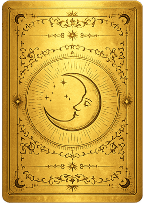
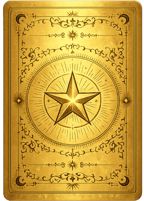
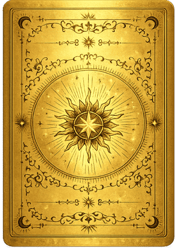
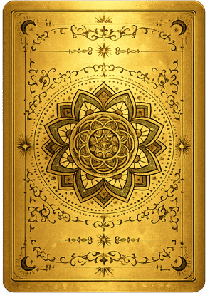
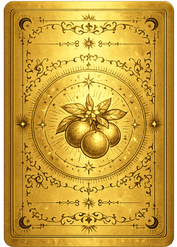
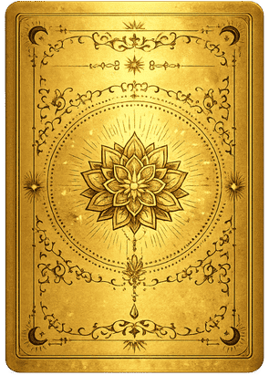
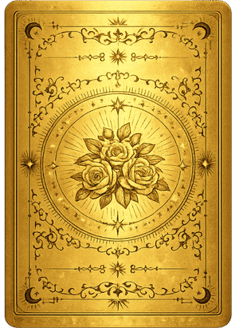
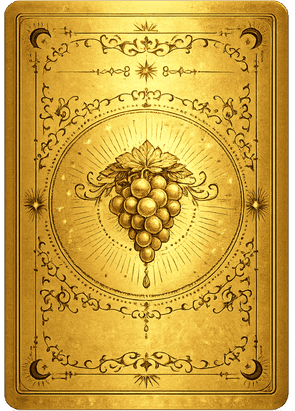

Descubra Gratuitamente o Que as Cartas Vão Revelar Sobre Sua Vida!
As cartas do baralho dourado sagrado podem revelar o caminho exato para remover os bloqueios em sua vida.
Qual dessas frases mais descreve o que você está sentindo esse ano?
Quando você pensa nas suas relações... Qual frase combina mais com o que você sente?
O que você busca e espera de mudança para sua vida este ano?
Escolha a opção que mais representa o momento que você está vivendo.
Você já teve a sensação de olhar ao redor e ver todo mundo avançando... Mas sentir que você ainda está travada no mesmo lugar?
As cartas podem mostrar por que essa sensação continua se repetindo…
(Última pergunta antes da sua leitura)
Se as cartas revelassem HOJE o que está bloqueando sua vida e te mostrassem o caminho exato para desbloquear...
Você estaria pronto para seguir essa orientação?
Analisando suas respostas...
A partir do que você me revelou...
O universo irá filtrar, entre milhares de combinações possíveis...
As únicas 8 cartas capazes de falar diretamente com a sua energia neste momento.
Escolha apenas 3 para descobrir o caminho exato para destravar tudo em 2026.
Prepare-se.
O baralho está aberto para você:
Não pense muito, apenas sinta.
Escolha 3 cartas, uma de cada vez, na ordem que o seu instinto mandar:







